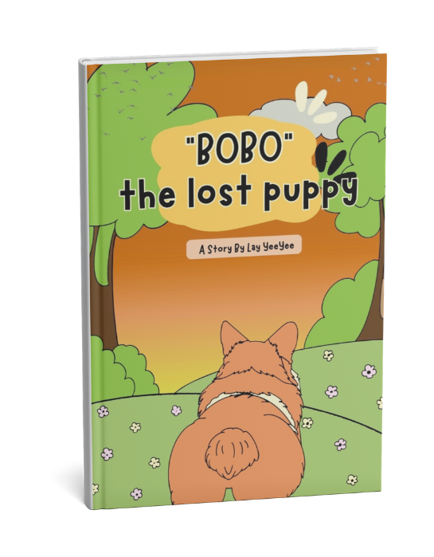
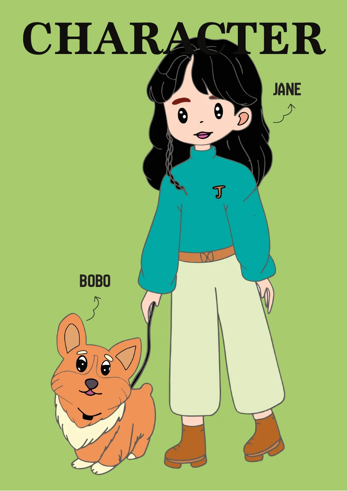

06 / ILLUSTRATION & STORYBOOK ALL PROJECTS
AN ILLUSTRATED STORYBOOK
BOBO,THE LOST
PUPPY
A little adventure about getting lost, finding your way, and finding a home.
READ BOBO’S STORY
01 / THE STORY
A small dog.
A big adventure.
Bobo chases a ball too far and loses his way. As the story unfolds, this little puppy finds comfort, care, and a place to call home. The book pairs a gentle narrative with lively illustrated spreads and a warm, hand-drawn world.

02 / A PUPPY’S WORLDILLUSTRATION / STORY

FOLLOW THE BALL
Out into
the wide world.
Illustrated scenes carry Bobo from a familiar patch of grass into new places, then gently lead him home again.
03 / THE COMPLETE STORY10 PAGES / INTERACTIVE BOOK
OPEN THE BOOK
Come along
with Bobo.
Turn through the complete ten-page story, from the cover to the last page.

CLOSED COVER / TAP TO OPEN
A small story, read one turn at a time.
04 / THE LAST PAGESCHARACTERS / HOME
MEET BOBO
A new friend
and a place to stay.


Jane and Bobo’s story comes to a quiet, happy ending.